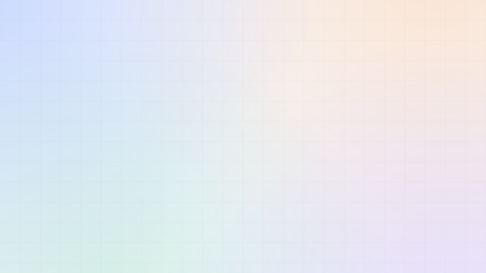
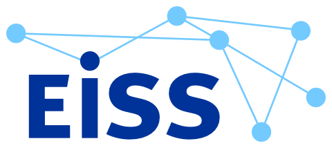
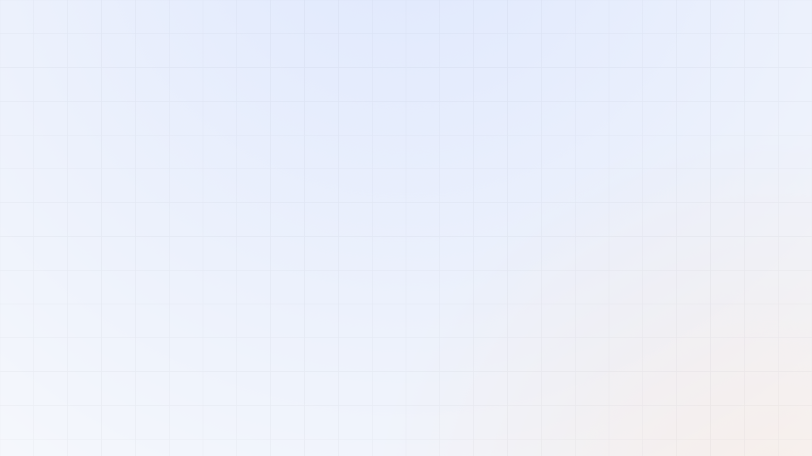

Boîte à outils conférence
Modèles de diapositives
Des modèles de diapositives prêts à l'emploi pour les sessions officielles des conférences NetSec et EISS. Huit mises en page dans le style maison de NetSec, au format 16:9 pour l'écran : titre, section, programme, intervenant, contenu, comparaison, plénière et un appel à l'action de clôture. Prévisualisez chacune ci-dessous, puis téléchargez le jeu modifiable pour construire votre session.

● European Security Studies Conference · Panel
Disruptive Machines
AI, Information Operations & Cyber Security
Chair & DiscussantDr Arthur Laudrain · ETH Zürich
● Friday, 12 June 2026 · 16:40 – 17:55 · D House, Lecture Hall 8

 Hosted by Stockholm University
Hosted by Stockholm University
Part One
01
The threat landscape
How automation is reshaping influence operations, and what it means for European resilience.

Programme · 16:40 – 17:55
Panel programme
16:40Opening & framing remarksA. Laudrain
16:50Generative AI & information operationsJ. Carver
17:10Cyber resilience & strategic autonomyS. Verschuren
17:30Discussion & Q&AAll
Chair & Discussant
Dr Arthur Laudrain
Senior Researcher · ETH Zürich
Works on cyber conflict, information security and the governance of emerging technologies, with a focus on election interference.
WG1
WG3
Key arguments
Three shifts to watch
Automation lowers the cost of influence while raising the cost of trust. The result reshapes three fronts at once.
Scale. Synthetic content makes volume cheap and provenance hard to verify.
Speed. Detection and response cycles compress from days to minutes.
Sovereignty. Capability gaps become strategic dependencies.
Risk versus response
The risk
Fragmented defence
National responses diverge; adversaries exploit the seams between mandates and jurisdictions.
The response
Networked knowledge
Shared methods, a common evidence base, and cross-border epistemic communities close the gaps.
Closing Plenary
Concluding remarks
& Best Paper Prize
Sanne Verschuren
Boston University
Julia Carver
Leiden University
Magnus Petersson
Stockholm University
Thank you, and one more thing
Before you go: join the NetSec Directory, the open, searchable who's-who of European security studies.
Add your bio
in ~2 minutes
netsec-cost.eu/people
Ces modèles sont destinés à un usage officiel pour les conférences NetSec et EISS. Les modèles sont fournis en anglais ; les noms, dates et lieux affichés sont des exemples. Conservez les logos NetSec et EISS dans leurs couleurs d'origine.